Publications
Explore HAI Lab's selected publications in Human-centered AI, VR and AR, Human-computer interaction, Eye tracking, Human behavior modeling, and intelligent interactive systems.
Journal Papers
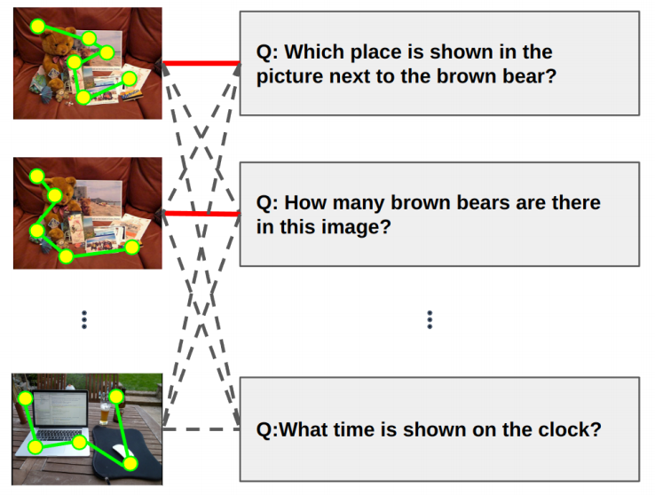
CGIT 2026
Learning Alignments of Human Gaze and Fine-grained Task Descriptions
Proceedings of the ACM on Computer Graphics and Interactive Techniques, 2026, 9(2): 1-18.
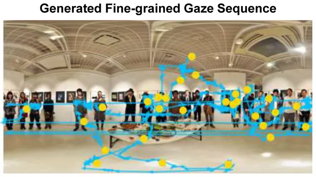
TiiS 2025
DiffGaze: A Diffusion Model for Modelling Fine-grained Human Gaze Behaviour on 360° Images
ACM Transactions on Interactive Intelligent Systems, 2026, 16(1): 1-23
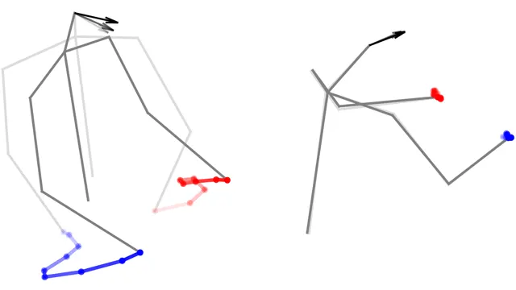
TVCG 2025 · ISMAR 2025 oral
HaHeAE: Learning Generalisable Joint Representations of Human Hand and Head Movements in Extended Reality
IEEE Transactions on Visualization and Computer Graphics (TVCG, oral presentation at ISMAR 2025), 2025, 31(10): 8726 - 8737
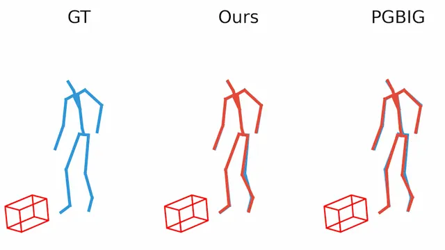
TVCG 2024 · ISMAR 2024 Journal-track
HOIMotion: Forecasting Human Motion During Human-Object Interactions Using Egocentric 3D Object Bounding Boxes
IEEE Transactions on Visualization and Computer Graphics (TVCG, ISMAR 2024 Journal-track), 2024, 30(11): 7375 - 7385
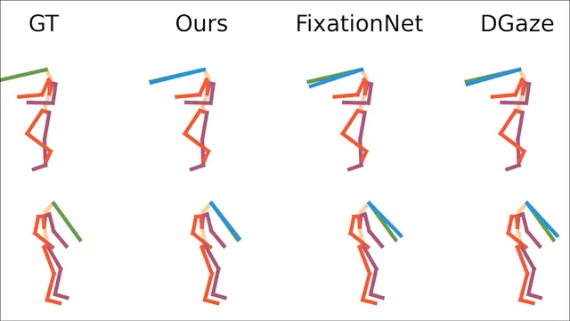
TVCG 2025 · ISMAR 2024 oral
Pose2Gaze: Eye-body Coordination during Daily Activities for Gaze Prediction from Full-body Poses
IEEE Transactions on Visualization and Computer Graphics (TVCG, oral presentation at ISMAR 2024), 2025, 31(9): 4655-4666
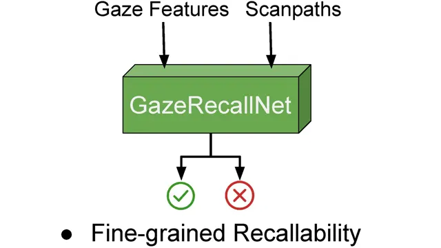
PACM HCI 2024 · ETRA
VisRecall++: Analysing and Predicting Visualisation Recallability from Gaze Behaviour
Proceedings of the ACM on Human-Computer Interaction (PACM HCI), 2024, 8(ETRA): 1-18
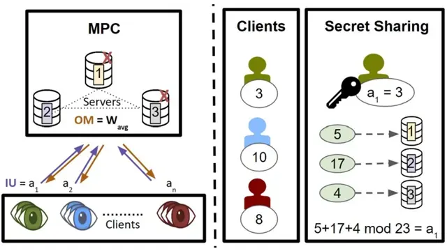
PACM HCI 2024 · ETRA
PrivatEyes: Appearance-based Gaze Estimation Using Federated Secure Multi-Party Computation
Proceedings of the ACM on Human-Computer Interaction (PACM HCI), 2024, 8(ETRA): 1-23
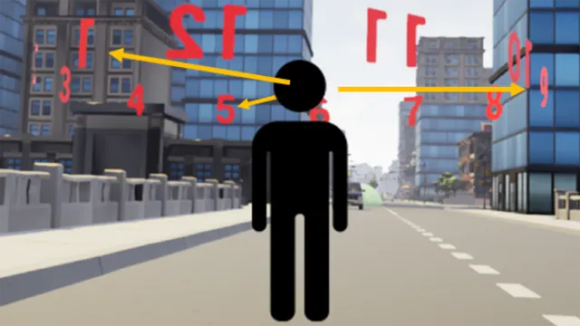
TVCG 2023 · IEEE VR 2023 oral
Intentional Head-Motion Assisted Locomotion for Reducing Cybersickness
IEEE Transactions on Visualization and Computer Graphics (TVCG, oral presentation at IEEE VR 2022), 2023, 29(8): 3458-3471
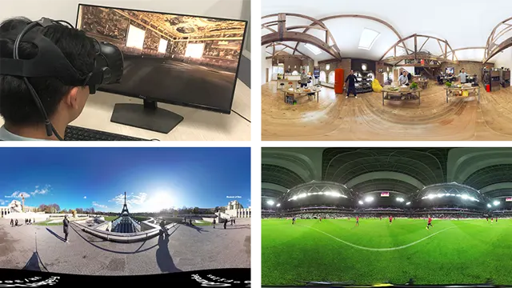
TVCG 2023 · IEEE VR 2023 oral
EHTask: Recognizing User Tasks from Eye and Head Movements in Immersive Virtual Reality
IEEE Transactions on Visualization and Computer Graphics (TVCG, oral presentation at IEEE VR 2022), 2023, 29(4): 1992-2004
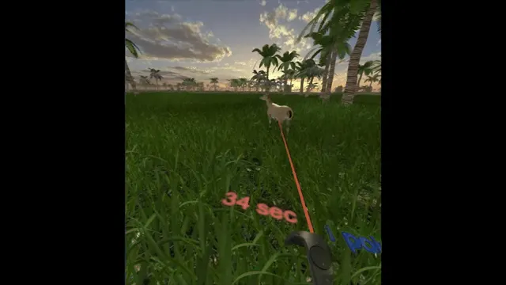
TVCG 2021 · IEEE VR 2021 Journal-track
FixationNet: Forecasting Eye Fixations in Task-Oriented Virtual Environments
IEEE Transactions on Visualization and Computer Graphics (TVCG, IEEE VR 2021 Journal-track), 2021, 27(5): 2681-2690
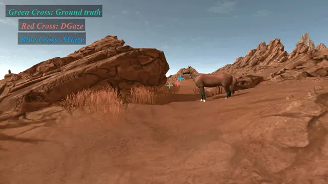
TVCG 2020 · IEEE VR 2020 Journal-track
DGaze: CNN-Based Gaze Prediction in Dynamic Scenes
IEEE Transactions on Visualization and Computer Graphics (TVCG, IEEE VR 2020 Journal-track), 2020, 26(5): 1902-1911
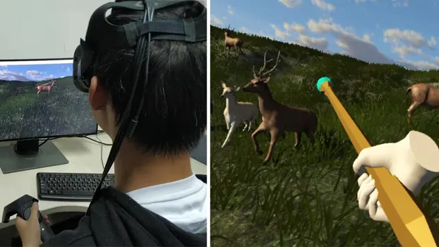
VRIH 2020
Temporal continuity of visual attention for future gaze prediction in immersive virtual reality
Virtual Reality and Intelligent Hardware (VRIH), 2020, 2(2): 142-152
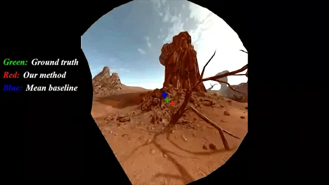
TVCG 2019 · IEEE VR 2019 Journal-track
SGaze: A Data-Driven Eye-Head Coordination Model for Realtime Gaze Prediction
IEEE Transactions on Visualization and Computer Graphics (TVCG, IEEE VR 2019 Journal-track), 2019, 25(5): 2002-2010
Conference Papers
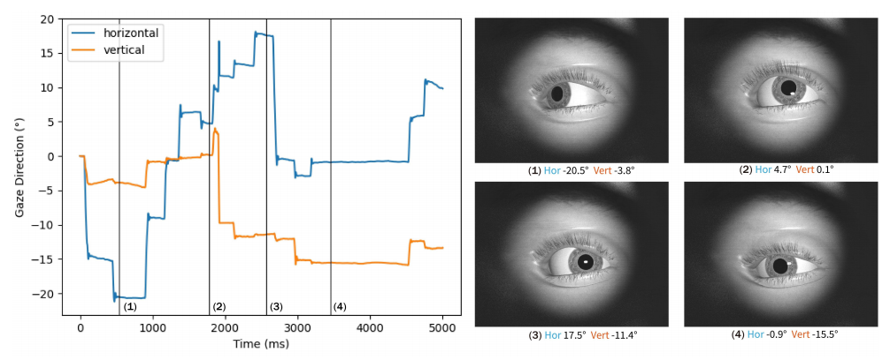
AFGR 2026
DiffEyeSyn: User-specific Subtle Eye Movement Synthesis Using Diffusion Models
Proceedings of the IEEE International Conference on Automatic Face and Gesture Recognition, 2026.
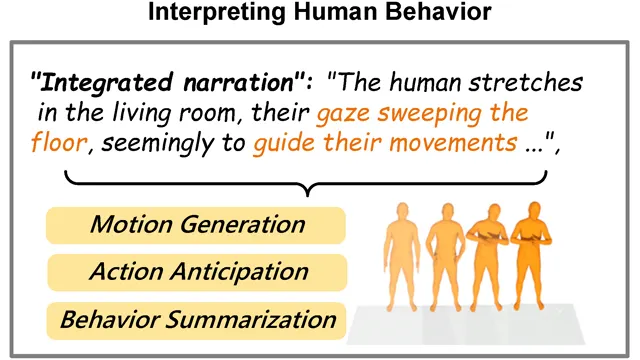
AAAI 2025
GazeInterpreter: Parsing Eye Gaze to Generate Eye-Body-Coordinated Narrations
Proceedings of the AAAI Conference on Artificial Intelligence, 2026, 40(21): 17410-17418
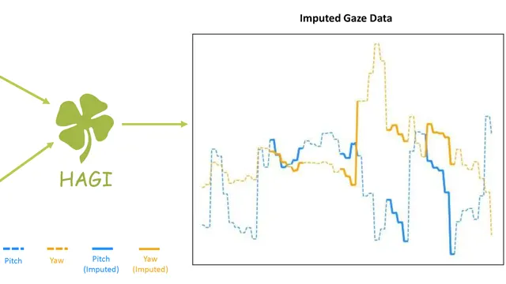
UIST 2025
HAGI: Head-Assisted Gaze Imputation for Mobile Eye Trackers
Proceedings of the ACM Symposium on User Interface Software and Technology (UIST), 2025: 1-14
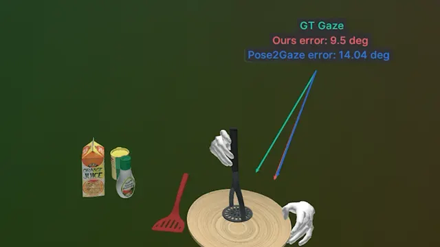
SIGGRAPH 2025
HOIGaze: Gaze Estimation During Hand-Object Interactions in Extended Reality Exploiting Eye-Hand-Head Coordination
Proceedings of the ACM Special Interest Group on Computer Graphics and Interactive Techniques (SIGGRAPH), 2025: 1-10
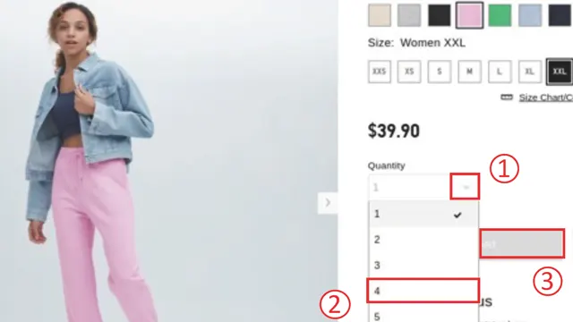
CHI 2025
SummAct: Uncovering User Intentions Through Interactive Behaviour Summarisation
Proceedings of the ACM CHI Conference on Human Factors in Computing Systems (CHI), 2025: 1-17
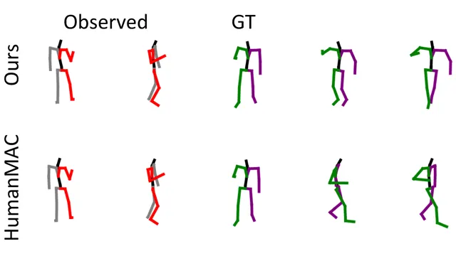
Pacific Graphics 2024
GazeMoDiff: Gaze-guided Diffusion Model for Stochastic Human Motion Prediction
Proceedings of the Pacific Conference on Computer Graphics and Applications (Pacific Graphics), 2024: 1-12
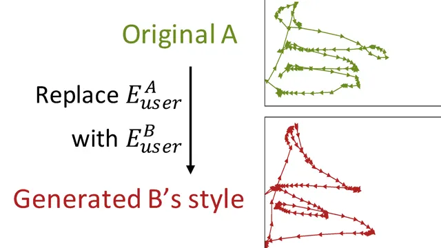
UIST 2024
DisMouse: Disentangling Information from Mouse Movement Data
Proceedings of the ACM Symposium on User Interface Software and Technology (UIST), 2024: 1-13
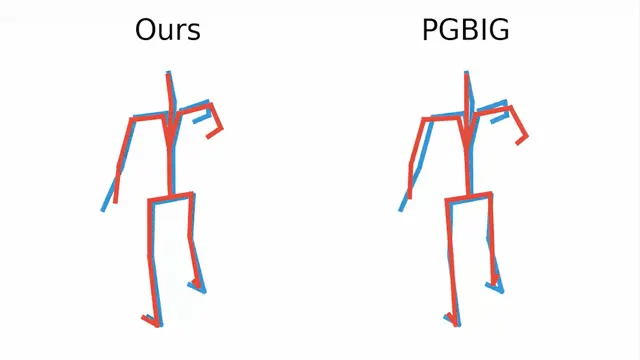
IROS 2024
GazeMotion: Gaze-guided Human Motion Forecasting
Proceedings of the IEEE/RSJ International Conference on Intelligent Robots and Systems (IROS), 2024: 13017-13022
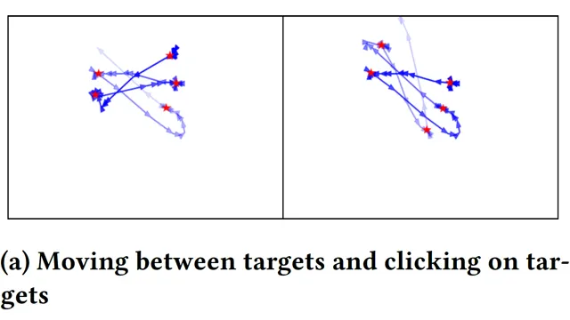
CHI 2024
Mouse2Vec: Learning Reusable Semantic Representations of Mouse Behaviour
Proceedings of the ACM CHI Conference on Human Factors in Computing Systems (CHI), 2024: 1-17
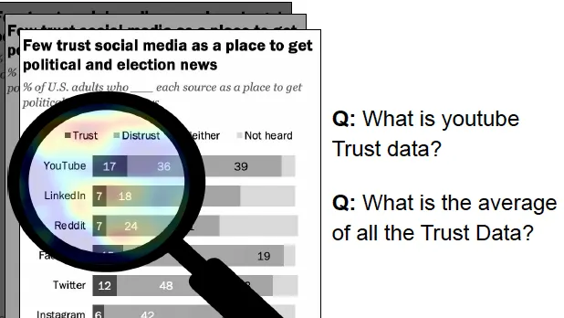
CHI 2024
SalChartQA: Question-driven Saliency on Information Visualisations
Proceedings of the ACM CHI Conference on Human Factors in Computing Systems (CHI), 2024: 1-14
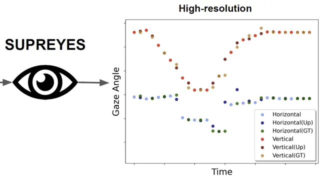
UIST 2023
SUPREYES: SUPer Resolution for EYES Using Implicit Neural Representation Learning
Proceedings of the ACM Symposium on User Interface Software and Technology (UIST), 2023: 1-13
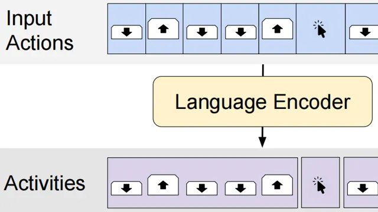
INTERACT 2023
Exploring Natural Language Processing Methods for Interactive Behaviour Modelling
Proceedings of the IFIP Conference on Human-Computer Interaction (INTERACT), 2023: 3-26
Short Papers, Abstracts, and Workshops
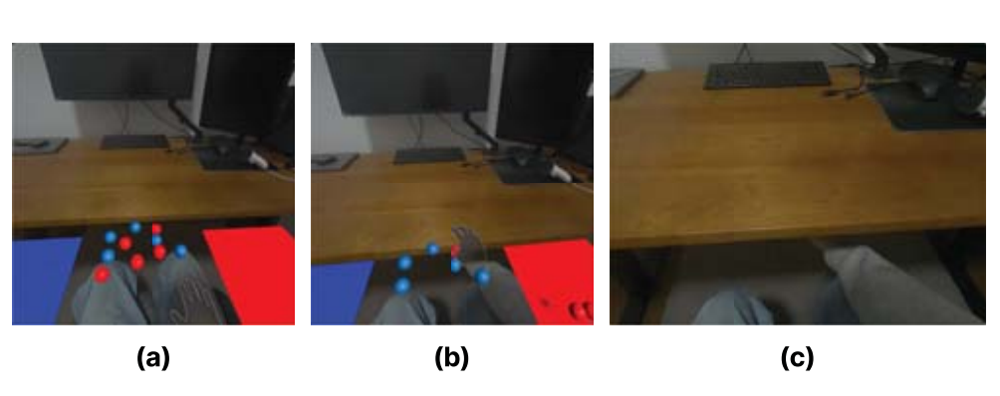
VRW 2026
Contextual Recovery: Guiding Hand Tracking Failures Recovery in Mixed Reality via VLM Reasoning
Proceedings of the 2026 IEEE Conference on Virtual Reality and 3D User Interfaces Abstracts and Workshops, 2026: 368-372
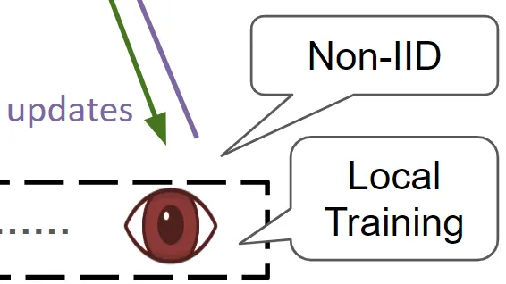
NeurIPS GMML 2023
Federated Learning for Appearance-based Gaze Estimation in the Wild
Proceedings of the NeurIPS Workshop Gaze Meets ML (NeurIPS GMML), 2023: 20-36
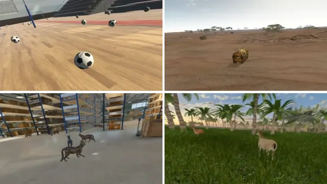
IEEE VRW 2021
Eye Fixation Forecasting in Task-Oriented Virtual Reality
Proceedings of the IEEE Conference on Virtual Reality and 3D User Interfaces Abstracts and Workshops (VRW), 2021: 707-708
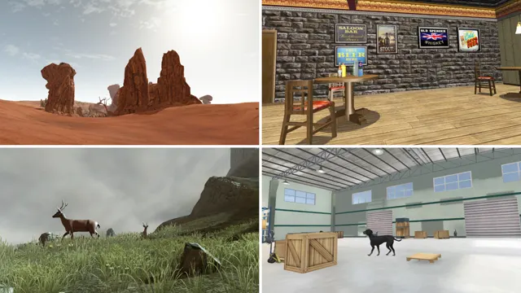
IEEE VRW 2020
Gaze Analysis and Prediction in Virtual Reality
Proceedings of the IEEE Conference on Virtual Reality and 3D User Interfaces Abstracts and Workshops (VRW), 2020: 543-544